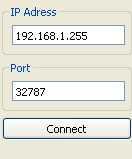
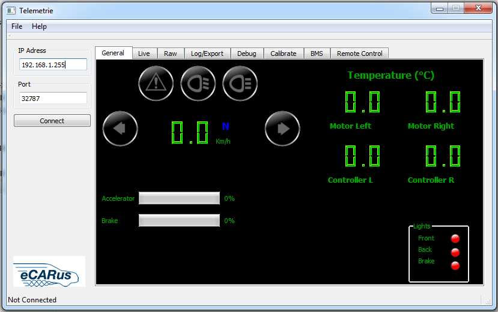

Debug Calibrate BMS
TELEMETRIE
[Return]
Telemetrie (= Fernmessung) bezeichnet die Übertragung von Messwerten eines am Messort befindlichen Messfühlers (Sensor) zu einer räumlich getrennten Stelle.
Telemetrie-Funktion:
-
Sicherstellung
einer ausreichenden Reichweite
- Berücksichtigung der Datenrate
- Kostengünstiges System
- Örtlich unbegrenzte Einsatzmöglichkeit
- Visualisierung der Messdaten

IP-Adresse
und Port:
Die hust IP Adresse ist : 192.168.1.255
Der zugehörige Port ist : 32787
*Nach dem Start zeigt das Fenster auf der linken Seite zwei Textfenster. In dem oberen Fenster wird die IP Adresse oder der Hostname des Servers eingegeben in der unteren der Port.
Anschließend kann mit einem klick auf Verbinden die Verbindung hergestellt werden. War der Verbindungsaufbau erfolgreich erscheint in der Statusbar links unten der Hinweis
"Connected to...". Ist ein Fehler aufgetreten finden sich weitere Informationen hierzu im Log in dem Reiter Log/Export.
connected
to k60 rear -> verbunden mit k60 hinten
connected to k60 front -> verbunden mit k60 vorne
*Der Computer muss mit der eigenen IP-Adresse 192.168.1.5 gestellt werden.
GENERAL
[Return]
Besteht eine Verbindung zum Auto, empfängt die Software, unabhängig davon ob die Fernsteuerung an ist, Daten. Diese werden im Reiter General, Live und Raw wiedergegeben.
Der Reiter General zeigt angelehnt an einem Fahrer Cockpit an, wie schnell das Auto fährt, sowie Gang und Lichter. Zusätzlich wird die Beschleunigung in Prozent und einem
Fortschrittsbalken angezeigt. Auch die Temperatur von Umrichter und Motor wird hier wiedergegeben.

LIVE [Return]
Im Live Reiter werden alle möglichen Daten vom Auto in einer Tabelle angezeigt. Diese Funktion ist vor allem nützlich, um den Zustand des Autos zu kontrollieren. Die Tabelle zeigt
unter anderem Runlevel der Tower, sowie Drehmoment, Spannung
& Strom der Umrichter und Status der Ethernet Verbindung

RAW
[Return]
*Der Raw Reiter listet alle empfangenen Nachrichten auf und zeigt deren ID und CAN als Bitstream auf. Gibt sie Informationen wie schnell die jeweiligen Nachrichten aktualisiert
werden
.

Der
Log&Export Reiter soll Statusänderungen der Software anzeigen,
sowie einen
Log über alle empfangenen Daten führen .
Aus Performance Gründen wird der Log nur auf Button Click aufgelistet, ansonsten wird dieser immer im Hintergrund aktualisiert .
Gegeben falls ist es auch möglich, diesen in einer Datei zu
Exportieren .
Zu Debuging Zwecken gibt es im Tab Debug die Möglichkeit beliebige CANoverEthernet Nachrichten an den Server zu schicken. Diese Nachrichten können entweder einmalig oder in
Intervallen geschickt werden .
Über die Auswahlknöpfe am linken Rand kann zwischen drei Eingabemoden gewechselt werden:
- Manual : Eine Beliebige 14 Byte lange CANoverEthernet Nachricht kann hexadezimal eingegeben werden.
- Guided : Der Nutzer kann die verschiedenen Parameter der CANoverEthernet Nachricht eingeben (oder automatisch bestimmen lassen). Hier ist es zum Beispiel möglich eine CAN
Nachricht nur durch Eingabe von ID und den 8 Nachrichtenbyte abzusenden.
- None
* Unabhängig vom Modus steht links von der Eingabemaske ein Knopf mit der Aufschrift "Send Now" zur Verfügung. Dieser Versendet die Nachricht (falls eine Verbindung besteht)
sofort und einmalig.
CALIBRATE: [Return]
Gaspedal kalibrieren :
Der
Tab calibrate erlaubt es das
Gaspedal im Auto zu kalibrieren .
Dazu
müssen die Anweisungen am Bildschirm befolgt
werden .
Der Click auf den Start Button sendet die Nachricht für die Aktivierung der Kalibrierung .
Der weitere
Vorgang zeigt dann auf der Software auf, was zu tun ist damit der
Vorgang zu
Ende ausgeführt werden kann .
BMS: [Return]
Im neuen Reiter BMS ist ein Battery Management System .
Ein Click auf dem Button Update
sendet eine Nachricht an das Auto, welcher den Status der Akkuzellen
überprüft .
Das Auto sendet daraufhin eine Nachricht zurück, die von der Software ausgewertet wird und auf diesem Reiter ein Update auslöst .
Ladestand der Zellen soll dabei die Batterie Bilder, ähnlich wie beim Handy, darstellen .
Zusätzlich
werden Werte, wie durchschnittliche und höchste Spannung angezeigt .
In der rechten Tabelle sollen ebenfalls Daten über die Akkus wiedergegeben werden .
Statt
auf Abruf, werden diese jedoch regelmäßig aktualisiert .
REMOTE CONTROL: [Return]
*Wenn
man
verbunden ist, kann man, sofern auch der Xbox Controller
eine Verbindung aufgebaut hat, auf dem Button Start Remote Control
drücken( Im
Reiter Remote Control
auf dem Bild). Wenn alles geklappt hat müssten die Schützen im Auto geschaltet sein.
*Anhand des Speed-Multiplicators können wir den Dämpfungsfaktor für Gaspedal kontrollieren.